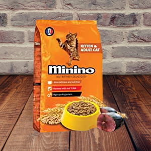
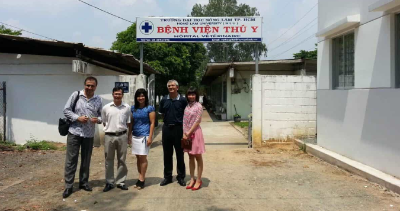

Mục lục
- Thực phẩm cho thú cưng:
- Thực phẩm cho chó
- Thực phẩm cho mèo
Các video vui nhộn
Các tiệm thú y
Hiểu biết của bạn
Thực phẩm
Thực phẩm cho chó
ANF
Thức ăn cho chó ANF là dòng thực phẩm mềm chuyên về thịt cừu nên phù hợp với chó con 6 tháng hoặc các chú chó đang nuôi con.
Classic Pets
Thực phẩm Classic Pets là dạng thức ăn chứa thành phần dinh dưỡng tốt cho chó phát triển cơ bắpThực phẩm Classic Pets dành cho chó có kích thước lớn như: chó bull pháp, chó mặt xệ, pitbull, golden, ngao tây tạng….

Fib's
Thành phần trong thức ăn cho chó Fib's bao gồm các loại thịt như thịt gà, thịt bò, thịt cừu, thịt thỏ, cá hồi, khoai tây, ngô, gạo, cá, mỡ gia cầm, đường ăn kiêng, trứng gà, nước táo, dầu cá hồi,…Fitmin
Fitmin thương hiệu tạo ra nhiều loại đồ ăn an toàn, chất lượng cho chó.Thức ăn được làm hoàn toàn từ thịt tươi rồi được sấy khô nên giữ lại được tối đa dưỡng chất.
Ganador
Trong sản phẩm của Ganador có chứa hàm lượng thịt gà và thịt cừu rất cao giúp đảm bảo nhu cầu năng lượng cao của loài chó.Đây là thực phẩm dành riêng cho các dòng chó to, đặc biệt tốt cho các giống chó becgie, pitbull, doberman….

Pedigree
Pedigree được đánh giá khá cao về mặt chất lượng.Pedigree là dạng đồ ăn sẵn dưới dạng ướt nên phù hợp với các dòng chó cảnh nhỏ như chihuahua, fox, poodle con….
Royal canin
Sản phẩm của Royal Canin phù hợp cho chó Poodle và các dòng chó nhỏ như: chó chihuahua, Bắc kinh lai Nhật, chó Nhật, Bắc kinh, corgi, chó fox…Smart Heart
SmartHeart là một thương hiệu thức ăn có ưu điểm là giá bán rẻ hơn nhiều.Sản phù hợp với chủng loại chó lớn như chó husky, golden, samoyed, labrador….

Zenith
Cung cấp thực phẩm hạt mềm cho chó con, sản phẩm của Zenith chứa nhiều chất dinh dưỡng như protein, tinh bột, đạm… Zenith có mùi vị thơm ngon kích thích vị giác thú cưng trị bệnh chán ăn, bỏ ăn.
Thực phẩm cho mèo
Whiskas
Whiskas là một thương hiệu thức ăn cho mèo được bán trên khắp thế giới. Whiskas cung cấp đầy đủ các dòng thức ăn mà những chú mèo yêu thích. Từ hương vị hải sản hấp dẫn được chế biến tươi ngon như chính tay bạn nấu.
Lider
Thức ăn khô Lider cho mèo với công thức cân bằng và hoàn chỉnh dành cho giống mèo trưởng thành. Sự cân bằng của Omega 3 & Omega 6 đã đạt được bằng cách sử dụng hạt lanh giúp lông bóng mượt. Chiết xuất cây Yucca giúp tăng khả năng hấp thụ dinh dưỡng, kiểm soát mùi.
Me-O
Thức ăn cho mèo Me-O chứa đầy đủ các vitamin, khoáng chất và taurine (cần thiết cho thị lực) mà mèo cần. Mọi chế độ ăn uống từ Me-O đều được phát triển đặc biệt để giúp ngăn ngừa nguy cơ FLUTD (bệnh đường tiết niệu dưới của mèo) và sỏi bàng quang ở mèo.

Minino
Thức ăn cho mèo Minino chứa các chất giúp khoẻ mắt mèo, những chất tốt cho xương và lông, tăng sức đề kháng của mèo nhà bạn.
Catrang
Với đặc tính dễ tiêu, hạt Catsrang giúp mèo đi phân rắn và giảm thiểu mùi hôi khó chịu - Ngăn ngừa lông vón cục trong ruột mèo - Hàm lượng dinh dưỡng cân bằng, catsrang phù hợp trong việc cải thiện da lông, phòng tránh bệnh quáng gà ở mèo - Sử dụng protein cao cấp tốt cho hệ tiêu hóa.Cat Eye
Thức ăn hạt cho mèo CAT EYE dành cho mèo trên 3 tháng tuổi. Tốt cho hệ Tiêu hóa; Hỗ trợ, tăng cường hệ miễn dịch. Cung cấp chất xơ tự nhiên, kiểm soát rụng lông. Giúp da khỏe, lông bóng mượt và giảm chứng rụng lông.Thư giản
Một số clip vui ngắn với các thú cưng
Tiệm thú y
Phòng khám thú y bệnh viện Petcare
 Địa chỉ 1: 124A Xuân Thủy, Phường Thảo Điền, Quận 2, TP. Hồ Chí Minh
Địa chỉ 1: 124A Xuân Thủy, Phường Thảo Điền, Quận 2, TP. Hồ Chí MinhHotline: (028) 3744 2505 – 0918 271 246
Địa chỉ 2: Số 14 (số cũ S8 – 1) Đường số 6, Hưng Vượng 2, R13, Phú Mỹ Hưng, Phường Tân Phong, Quận 7, TP. Hồ Chí Minh
Hotline: (028) 5412 1175 – 0917 941 246
Địa chỉ 3: 146 Xóm Đất, Phường 9, Quận 11, TP. Hồ Chí Minh
Hotline: (028) 3963.3740 – 0888 671 088
New Pet Hospital & Spa
Địa chỉ 1: 53 Đặng Dung, P.Tân Định, Q.1, TP.HCMHotline: 028 62 69 39 39 – 028 62 69 39 93
Địa chỉ 2: 299/23N , LÝ THƯỜNG KIỆT, P.15, Q.11, Tp.HCM
Hotline: 028 62 56 39 39 – 028 62 56 38 38
Phòng khám thú y Pet Clinic
 Địa chỉ: 94 Đỗ Xuân Hợp, Khu phố 6, Phước Long A, Quận 9, TP. HCM
Địa chỉ: 94 Đỗ Xuân Hợp, Khu phố 6, Phước Long A, Quận 9, TP. HCMHotline: 0901 827 359 – 0901 826 359
Bệnh viện thú y trường Đại học Nông Lâm
 Địa chỉ: Khu thực nghiệm ĐH Nông Lâm, Khu phố 5, Linh Trung, Thủ Đức, Tp. HCMHotline: 028.38967596